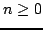

Usage
for x in s repeat { ...}
for x in generator s repeat { ...}
Signature
generator: % Generator T
| Parameter | Type | Description |
|---|---|---|
| s | % | a stream |
Description
This function allows the elements of a stream to be iterated.
Remarks
Since those generators are infinite, you should have a termination condition either inside the loop or in parallel with the generator in order to guarantee termination.
Example
The following code creates the stream of all the squares for  and prints those of them that are smaller than:
import from MachineInteger, Stream MachineInteger;
s := stream(0, (n:MachineInteger):MachineInteger +-> n^2);
for x in s while x < 1000 repeat { stdout << x << newline; }